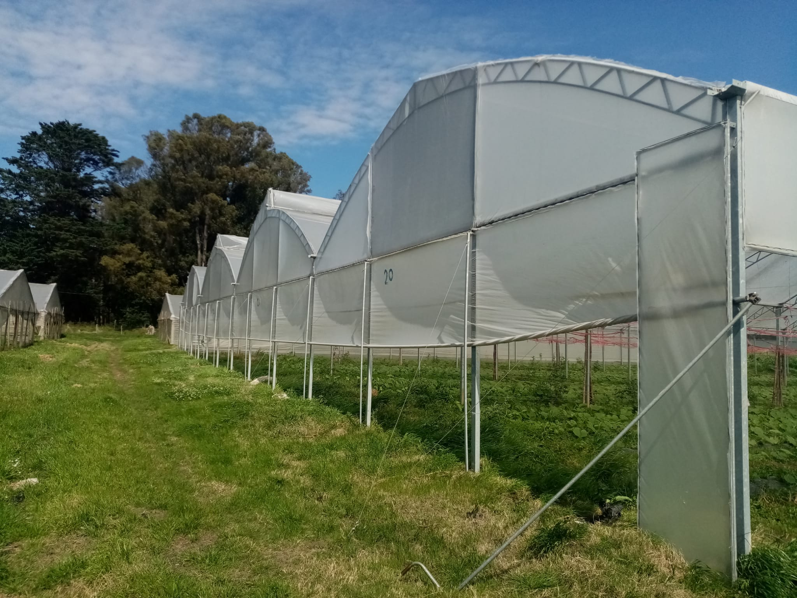
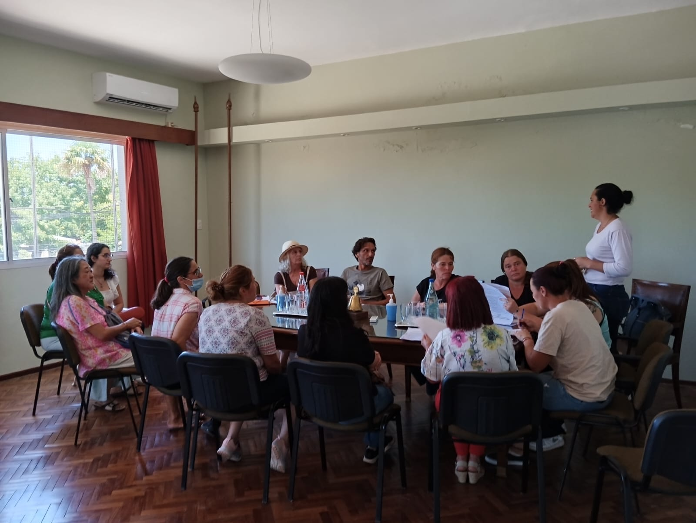
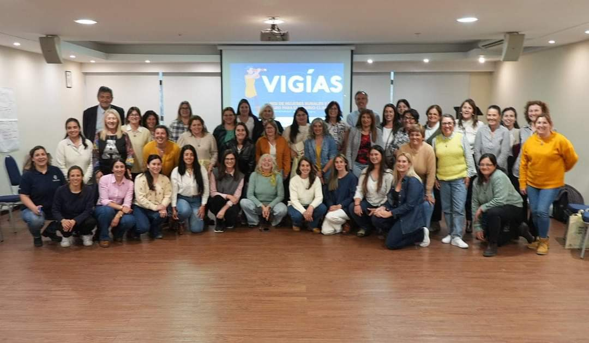

Convocatoria Mujeres que Transforman 2026 entrega hasta $450.000 por proyecto
La convocatoria Mujeres que Transforman está dirigida a mujeres líderes de empresas cuyos proyectos promuevan innovación, competitividad y mejoras en sus micros, pequeñas y medianas empresas (mipymes). Entre estas se incluyen propuestas para mejorar productos, servicios o procesos productivos; estrategias de comercialización; fortalecimiento de capacidades y habilidades de gestión; y prácticas de sostenibilidad y circularidad; entre otras dimensiones.
🗓️ Plazo para presentar proyectos: 27 de julio de 2026
Bases
📌 Postulaciones
🖥️ Registro para talleres informativos virtuales
Comunicado del Registro Nacional Frutihortícola
DIGEGRA informa que a partir del lunes 1 de junio se habilitará el Registro Nacional Frutihortícola (RNFH) para la realización de inscripciones nuevas y actualizaciones correspondientes al ejercicio 2026.
Ver el Comunicado
Lista de Convocatorias vigentes del Ministerio de Ganadería, Agricultura y Pesca
En el siguiente enlace se encuentra el listado de Convocatorias vigentes del Ministerio de Ganadería, Agricultura y Pesca
Ver convocatorias vigentes
Discurso de la Comisión de Mujeres en la Asamblea Anual Ordinaria 2026
En el siguiente enlace se encuentra disponible el dicruso brindado por representantes de la Comisión de Mujeres en la Asamblea Anual Ordinaria 2026.
Descargue el Discurso
Asamblea Anual Ordinaria 2026: renovación de autoridades y aprobación de la gestión institucional
desarrollo, la participación y el fortalecimiento del sector agropecuario.
Descargue la Memoria Anual
Asamblea Anual Ordinaria 2026: renovación de autoridades y aprobación de la gestión institucional
El pasado domingo 7 de junio se realizó, en nuestra sede, la Asamblea Anual Ordinaria de la Sociedad de
Fomento y Defensa Agraria, una instancia fundamental para la vida institucional que convocó a socios,
representantes nacionales y departamentales. Durante la jornada se aprobaron la Memoria Anual y el
balance contable correspondiente al ejercicio finalizado, se presentó el discurso del presidente Martín
Bellenda, se compartió la Memoria Anual de la Comisión de Mujeres y se procedió a la elección de la
nueva Comisión Directiva para el período 2026-2027, reafirmando el compromiso de la institución con el
desarrollo, la participación y el fortalecimiento del sector agropecuario.
Descargue la Memoria Anual
Programa Agua para la Granja
La presente convocatoria se enmarca en el Programa “Agua para la Granja” que pretende brindar apoyo
financiero no reembolsable y facilidades de acceso a financiamientos reembolsables a productoras/es
granjeros, para la implementación de proyectos prediales de acceso al agua para la producción mejorando
la capacidad de las unidades productivas para hacer frente a la variabilidad climática.
15 de abril - Día del Productor Rural
La Sociedad de Fomento y Defensa Agraria saluda a todos los productores y las productoras rurales en su
día.
La IM impulsa el Plan Ovino y firma convenio con el Movimiento de Juventud Agraria
Este plan está enfocado en jóvenes y pequeños productores y apunta a fortalecer la producción local en
el Montevideo Rural.
Link a noticia en IMM
Link a Formulario
Inscripciones abiertas para el fondo mujeres que emprenden de la IMM
Hasta el 15 de mayo inclusive estarán abiertas las inscripciones, que se realizarán a través de un
formulario web que ya está disponible..
Link a noticia en IMM
MGAP convoca a presentar anteproyectos para la cadena frutihortícola y apícola
Hasta el 15 de mayo inclusive estarán abiertas las inscripciones, que se realizarán a través de un
formulario web que ya está disponible..
Link a noticia en IMM
MGAP convoca a presentar anteproyectos para la cadena frutihortícola y apícola
La Dirección General de la Granja abrió una convocatoria para apoyar iniciativas de comercialización,
industrialización y exportación de frutas, hortalizas y productos de la colmena, con el objetivo de
fortalecer la actividad productiva y agregar valor en origen.
Link a noticia en MGAP
MGAP convoca a presentar anteproyectos para la cadena frutihortícola y apícola
La Dirección General de la Granja abrió una convocatoria para apoyar iniciativas de comercialización,
industrialización y exportación de frutas, hortalizas y productos de la colmena, con el objetivo de
fortalecer la actividad productiva y agregar valor en origen.
Link a noticia en MGAP
Presentación de anteproyectos comerciales, industriales y/o exportación
La presente propuesta busca dar continuidad a las políticas de apoyo al sector agroindustrial vinculado
a rubros granjeros, así como fomentar la prospección de alternativas comerciales a nivel nacional o a
través de la exportación.
Link a noticia en MIDES
Curso Curso Jóvenes Lideresas Rurales
Se realizará la 7ma. edición del Curso Jóvenes Lideresas Rurales -destinado a mujeres jóvenes rurales-
con perspectiva de género y que forma parte de los compromisos asumidos en el marco de la Política de
Género Agro.
Link a noticia en MIDES
Uso y manejo seguro de fitosanitarios en el sector frutihortícola
La Dirección General de la Granja publica el cronograma 2026 de los cursos “Uso y manejo seguro de
fitosanitarios en el sector frutihortícola” y Exámenes de Renovación para la obtención del Carné del
aplicador granjero.
Link a noticia en MGAP
Curso Presencial Uso y Manejo de Fitosanitarios
En Agosto tuvo lugar el Curso Presencial de "Uso y Manejo Seguro de Fitosanitario" aprobado por la
Dirección General de la Granja dirigido a productores granjeros, asalariados y empleados de empresas que
manipulan y aplican productos fitosanitarios y requieren el "Carnet de Aplicador Granjero".
Uruguay aprobó el Plan Nacional de Bioinsumos
Uruguay aprobó oficialmente el Plan Nacional de Bioinsumos a través del Decreto N° 042/025 , firmado el
20 de febrero de 2025. Este plan, elaborado por el Ministerio de Ganadería, Agricultura y Pesca (MGAP),
responde al mandato establecido en la Ley N° 20.212 del 6 de noviembre de 2023, que declara de interés
nacional el uso de bioinsumos en la producción agropecuaria y encomienda al MGAP la elaboración del Plan
Nacional de Bioinsumos.
Link a noticia en MGAP
A Granja Nacional
Por el Directivo Alberto Iglesias La granja Frutihortícola ha perdido en el 2024, la gran oportunidad de
apropiarse de su destino, no supo o no pudo salir del tutelaje del estado, posibilidad que estaba en la
palma de su mano, luego de haberse aprobado en la LUC, tal como lo prometiera el presidente Luis Lacalle
Pou, la creación del INSTITUTO DE LA GRANJA, herramienta tal vez perfectible, pero que era la “suelta de
amarras” para que este sector productivo fuera artífice de su destino. El primer intento fue la JUNAGRA
donde participaban en las políticas de desarrollo y asesoramiento al ministerio correspondiente,
representantes de las gremiales de productores, era un órgano independiente, con un cuerpo de ingenieros
propio que incluso llego a generar su propio presupuesto y era ordenador de gasto con un inciso
propio...
Leer Artículo Completo...
Ver Anexo I
Ver Anexo II
Gripe Aviar en el Departamento de Montevideo
App "Cuaderno de campo hortícola"
En el marco del programa AGROTICs, la Sociedad de Fomento y Defensa Agraria invita a esta capacitación
abierta a todo público interesado. El proyecto Agrotic fue presentado en 2022 y financiado por la
Dirección General de Desarrollo Rural del MGAP.
Ivernáculos

App "Cuaderno de campo hortícola"
La convocatoria se enmarca en las políticas positivas del Plan Nacional de Género en Políticas
Agropecuarias Desarrollo productivo y tecnológico Firma del Convenio Mujeres de la Granja segunda
edición DIGEGRA, 11 proyectos - Granjeras del Oeste Montevideano

Aplicador Profesional de Fitosanitarios con Drones
Con visión de futuro pensando en fuentes en formación técnica y salidas laborales para la juventud, la
Directiva Gianella Galo obtiene el carne de Aplicador Profesional de Fitosanitarios con drones, formando
parte del primer grupo de Mujeres de MGAP. Montevideano
Colaboración con la Junta Departamental
En ese libro trabajaron las delegadas a la Mesa de Desarrollo Rural de la MGAP, directivas Susana Dobal
y Gianella Galo, el cual fue presentado el 6 de noviembre de 2024
Enlace a Junta Departamental de Montevideo
Colaboración con la Junta Departamental
La directiva Gianella Galo, quedo seleccionada para la formación del primer grupo de Mujeres, en Cambio
Climático, dictado por MGAP, Ministerio de Ambiente, Sinae, Inumet, INIA,ONU,PNUD

Políticas Agropecuarias
Las integrantes de Mujeres de la SFDA, trabajan con el Plan Nacional de Género en las Políticas
Agropecuarias
Sesión Nacional REAF Mercosur
Delegadas de la MDR Montevideo a la Sesión Nacional REAF Mercosur, Gianella Galo y Susana Dobal ambas
directivas
Maestra Susana Dobal
Maestra Susana Dobal, primera secretaría del Directorio en 93 años de historia de la SFDA.
Día Internacional de la Mujer Rural
Declaración de Interés de la Junta Departamental a las actividades a realizar el 15 de Octubre Día
Internacional de la Mujer Rural Apoyamos la creación del Sello Ministerial MURU
Comisión De Mujeres
La Comisión de Mujeres recibe con el CRO a 200 mujeres del municipio D y las Técnicas de la Unidad de
Género, desarrollando ellas distintos talleres para las visitantes
Expo Prado
Nexo con la IM, Unidad de Desarrollo Rural y Departamento de Desarrollo Económico, Directiva Gianella
Galo, por segundo año consecutivo nuclea a productoras y productores. Respondiendo a la propuesta de la
IM, participando en la Expo Prado 2023 y 2024, sin costo para los expositores.
Encuentro de Agromercados de Latinoamerica
Encuentro de Agromercados de Latinoamérica (FLAMA) lo integran todos los países de Latinoamérica. El
Directivo José Janavel, en su calidad de delegado al directorio de la UAM viajó junto al Presidente de
la UAM Ing. Agrónomo Daniel Garin a Santiago, donde participaron miembros de Uruguay, Argentina,
Paraguay, Colombia, Brasil y México Este grupo se encarga de realizar intercambio de los distintos
agromercados basado en las estratégicas de cómo comercializan sus productos de la manera más eficiente y
tratando siempre de conservar las normas ambientales.
En este caso, el mercado de Chile es pionero en materia de Seguridad y Reciclaje El viaje consistió en
dos etapas, primero fue conocer el Mercado de Lo Valledor en Santiago, siendo recibidos por el
Presidente del Mercado y sus autoridades mostrando las distintas secciones del mercado. Demostrando un
amplio conocimiento y manejo en el nivel asistencial en cuanto a la asistencia a comedores de niños,
adultos mayores y actividades deportivas
Patrimonio
Todos los años la SFDA se une a la celebración del día del Patrimonio. El directivo Dr.Romulo Guerrini
es quien lleva adelante esa magnífica tarea.